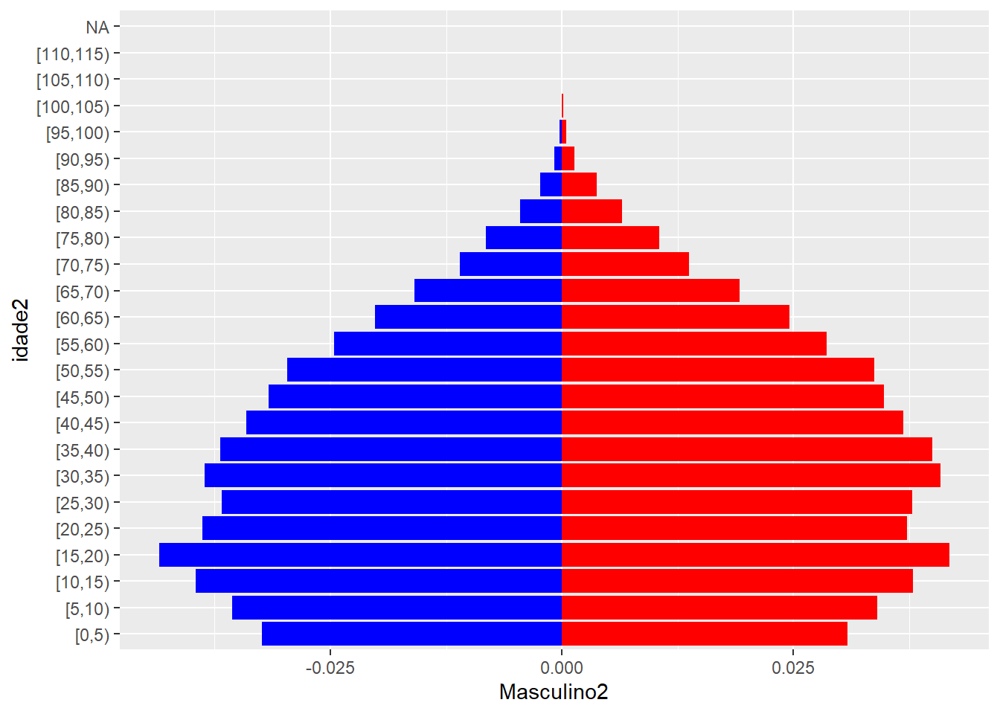
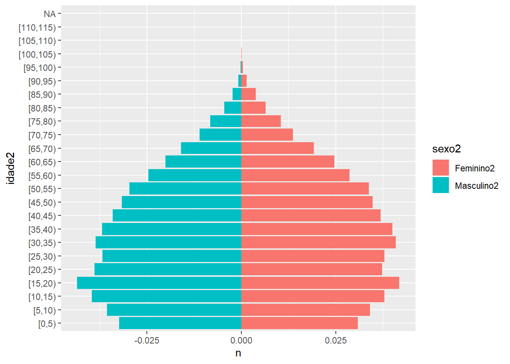

Pra quem está acostumado a trabalhar com os microdados do IBGE ou do Ministério da Saúde, a ideia de um dado “organizado” pode parecer bastante óbvia. Em suma, um dado “tidy” é um dado em que cada linha representa uma observação. No caso dos demógrafos, as observações geralmente representam pessoas numa população humana. Ou seja, cada linha representa uma pessoa e cada coluna representa uma informação que temos sobre ela. Claro que é possível fazer uma definição mais genérica que isso, mas essa nos é suficiente por enquanto.
Este pacote também faz parte do “tidyverse”, conjunto de pacotes que introduzimos lá atrás no ggplot2, depois no dplyr, e seu objetivo é transformar dados “não-tidy” em dados “tidy”, o que ele faz através de quatro funções: pivot_longer(), pivot_wider(), unite() e separate().
Vamos tentar demonstrar a utilidade dessas funções mesmo num contexto em que não precisamos reorganizar nossos bancos de dados. O fato é que frequentemente essa reorganização é importante para realizar etapas de métodos demográficos ou produzir gráficos.
Última PNAD anual antes de sua substituição pela PNAD Contínua, é um banco de fácil obtenção e também fácilmente carregado em R. Ele pode ser baixado diretamente do site do ibge, mas para facilitar as coisas, os arquivos foram subidos no Classroom.
O código abaixo é um extrato de apenas algumas variáveis, que utilizaremos para tentar construir uma pirâmide etária.
library(readr)
colunas <- fwf_cols(
ano = c(1, 4),
uf = c(5, 6),
sexo = 18,
idade = c(27, 29),
peso = c(791, 795)
)
tipos <- cols(
ano = col_factor(),
uf = col_factor(),
sexo = col_factor(),
idade = col_integer(),
peso = col_double()
)
pnad <- read_fwf(
file = "pnad2015/Dados/PES2015.gz",
col_positions = colunas,
col_types = tipos
)
pnad$sexo <- factor(pnad$sexo, labels = c("Masculino", "Feminino"))
pnad## # A tibble: 356,904 x 5
## ano uf sexo idade peso
## <fct> <fct> <fct> <int> <dbl>
## 1 2015 11 Masculino 23 270
## 2 2015 11 Feminino 23 270
## 3 2015 11 Feminino 35 270
## 4 2015 11 Masculino 34 270
## 5 2015 11 Feminino 11 270
## 6 2015 11 Feminino 7 270
## 7 2015 11 Feminino 4 271
## 8 2015 11 Feminino 18 270
## 9 2015 11 Masculino 46 271
## 10 2015 11 Feminino 81 270
## # ... with 356,894 more rowsunite() e separate()unite() e seu contrário, separate() são responsáveis por juntar/separar os dados de uma coluna/variável. Um dos melhores exemplos seria a leitura do Censo, em que você tem uma estrutura mais ou menos assim:
## # A tibble: 3 x 2
## uf munic
## <chr> <chr>
## 1 35 09502
## 2 11 01608
## 3 31 05060Eu poderia querer reunir essas variáveis em uma só, chamada “muniat”. Preciso de uma função que “cole” o valor de cada célula uma na outra. Logo:
## # A tibble: 3 x 3
## muniat uf munic
## <chr> <chr> <chr>
## 1 3509502 35 09502
## 2 1101608 11 01608
## 3 3105060 31 05060Normalmente, unite() apaga as colunas originais depois de juntar, mas eu especifiquei remove = FALSE para evitar isso. Unite funciona como outros pacotes do tidyverse, você especifica um banco de dados, dá um nome pra sua coluna nova e depois específica quais colunas serão “coladas” e qual separador você quer entre elas. Ali, eu disse que não queria separador. O padrão é colocar _.
separate() faz o contrário. Saca só.
## # A tibble: 3 x 5
## muniat uf2 munic2 uf munic
## <chr> <chr> <chr> <chr> <chr>
## 1 3509502 35 09502 35 09502
## 2 1101608 11 01608 11 01608
## 3 3105060 31 05060 31 05060Ela recebe o banco de dados, depois a coluna que você deseja separar, depois um vetor com as colunas nas quais você quer separar, e por fim, uma das possibilidades é você separar pela posição (existem outras), que foi o que fiz adiante, “quebrando” a coluna na segunda posição. Novamente, especifiquei que não queria remover as colunas originais, apenas para finalidade de demonstração.
No caso da PNAD com a qual estamos trabalhando, não é necessário fazer esses ajustes. Mas fica na sua caixinha de ferramentas, caso você precise.
pivot_longer() e pivot_wider()O objetivo destas funções é reformatar linhas e colunas. Eu acho um pouco complicado explicar o que elas fazem com palavras, acho que uma demonstração visual funciona bem melhor. Vamos ver o que elas fazem com o banco de dados da PNAD.
De maneira sucinta, pivot_wider() “puxa as orelhas” do seu banco de dados, aumentando o seu número de variáveis e diminuindo o número de observações, enquanto pivot_longer() “puxa o pé” dele, diminuindo o número de colunas e aumentando o número de linhas.
Mas porque eu iria querer fazer isso com meu banco? Se você já fez alguma pirâmide etária, sabe que é necessário separar a população masculina da feminina e multiplicar a população masculina por um número negativo. Uma das formas mais eficientes de fazer isso, é separar as observações dos homens e das mulheres em colunas diferentes.
Pra começar, precisamos transformar nosso banco de dados em um conjunto de valores agregados que contém nossa população. Vamos fazer isso com dplyr.
library(dplyr)
(pir_et <- pnad %>%
mutate(idade2 = cut(idade, seq(0, max(idade), 5), right = FALSE)) %>%
group_by(sexo, idade2) %>%
count(wt = peso)
)## Warning: Factor `idade2` contains implicit NA, consider using
## `forcats::fct_explicit_na`
## Warning: Factor `idade2` contains implicit NA, consider using
## `forcats::fct_explicit_na`## # A tibble: 46 x 3
## # Groups: sexo, idade2 [46]
## sexo idade2 n
## <fct> <fct> <dbl>
## 1 Masculino [0,5) 6629613
## 2 Masculino [5,10) 7288827
## 3 Masculino [10,15) 8103415
## 4 Masculino [15,20) 8911238
## 5 Masculino [20,25) 7955353
## 6 Masculino [25,30) 7526188
## 7 Masculino [30,35) 7898995
## 8 Masculino [35,40) 7563610
## 9 Masculino [40,45) 6981243
## 10 Masculino [45,50) 6492133
## # ... with 36 more rowsNote que após essas transformações, ficamos com uma coluna n que tem o número de pessoas nesses grupos de idade e sexo. Para o próximo passo, seria mais fácil se os homens estivessem contados em uma coluna, e as mulheres, em outra.
## Warning: Factor `idade2` contains implicit NA, consider using
## `forcats::fct_explicit_na`## # A tibble: 24 x 3
## # Groups: idade2 [24]
## idade2 Masculino Feminino
## <fct> <dbl> <dbl>
## 1 [0,5) 6629613 6311845
## 2 [5,10) 7288827 6972994
## 3 [10,15) 8103415 7761034
## 4 [15,20) 8911238 8567731
## 5 [20,25) 7955353 7635507
## 6 [25,30) 7526188 7749389
## 7 [30,35) 7898995 8381687
## 8 [35,40) 7563610 8194329
## 9 [40,45) 6981243 7555175
## 10 [45,50) 6492133 7115296
## # ... with 14 more rowsMoleza! pivot_wider() pegou célula que tinha o valor “Masculino” na variável sexo e colocou numa nova coluna com esse nome, e cada célula que tinha o valor “Feminino” na variável sexo e colocou na coluna “Feminino”. Como em outras funções, começamos especificamos um banco de dados, depois, a coluna de onde saem os “nomes” (Masculino e Feminino) e a coluna de onde saem os valores da célula (n).
Continuando pra nossa pirâmide etária, precisamos que a coluna dos homens esteja negativa e que ambas as colunas estejam em proporção do total. Fazemos isso com mutate(), lembre que é preciso desagrupar o banco!!!
total <- with(pir_et, sum(Masculino, na.rm = TRUE) + sum(Feminino, na.rm = TRUE))
(pir_et <- pir_et %>%
ungroup() %>%
mutate(Masculino2 = (Masculino / total) * -1,
Feminino2 = Feminino / total))## # A tibble: 24 x 5
## idade2 Masculino Feminino Masculino2 Feminino2
## <fct> <dbl> <dbl> <dbl> <dbl>
## 1 [0,5) 6629613 6311845 -0.0324 0.0308
## 2 [5,10) 7288827 6972994 -0.0356 0.0340
## 3 [10,15) 8103415 7761034 -0.0396 0.0379
## 4 [15,20) 8911238 8567731 -0.0435 0.0418
## 5 [20,25) 7955353 7635507 -0.0388 0.0373
## 6 [25,30) 7526188 7749389 -0.0367 0.0378
## 7 [30,35) 7898995 8381687 -0.0386 0.0409
## 8 [35,40) 7563610 8194329 -0.0369 0.0400
## 9 [40,45) 6981243 7555175 -0.0341 0.0369
## 10 [45,50) 6492133 7115296 -0.0317 0.0347
## # ... with 14 more rowsAgora é só montar o gráfico com ggplot2.
library(ggplot2)
ggplot(pir_et) +
geom_col(aes(idade2, Masculino2), fill = "blue", na.rm = TRUE) +
geom_col(aes(idade2, Feminino2), fill = "red", na.rm = TRUE) +
coord_flip()## Warning: Removed 2 rows containing missing values (position_stack).
Mas há um jeito um pouco mais elegante de montar esta pirâmide. O resultado final deve ser muito parecido, mas a gente economiza um pouco de código no ggplot. Pra isso, a gente precisa recompor o nosso banco de dados em formato “longo”, com as variáveis Masculino2 e Feminino2 reunidas numa coluna só, que vamos chamar de sexo2. Pra fazer isso, precisaremos aplicar a irmã da pivot_wider().
(pir_et2 <- pivot_longer(
data = pir_et,
cols = c(Masculino2, Feminino2),
names_to = "sexo2",
values_to = "n"
))## # A tibble: 48 x 5
## idade2 Masculino Feminino sexo2 n
## <fct> <dbl> <dbl> <chr> <dbl>
## 1 [0,5) 6629613 6311845 Masculino2 -0.0324
## 2 [0,5) 6629613 6311845 Feminino2 0.0308
## 3 [5,10) 7288827 6972994 Masculino2 -0.0356
## 4 [5,10) 7288827 6972994 Feminino2 0.0340
## 5 [10,15) 8103415 7761034 Masculino2 -0.0396
## 6 [10,15) 8103415 7761034 Feminino2 0.0379
## 7 [15,20) 8911238 8567731 Masculino2 -0.0435
## 8 [15,20) 8911238 8567731 Feminino2 0.0418
## 9 [20,25) 7955353 7635507 Masculino2 -0.0388
## 10 [20,25) 7955353 7635507 Feminino2 0.0373
## # ... with 38 more rowsAgora, nossa chamada pro ggplot2 pode ficar um pouco mais elegante.
## Warning: Removed 2 rows containing missing values (position_stack).
Quando você reformata um banco de dados, você precisa ter cuidado com os dois tipos de missing:
NA.Veja o seguinte exemplo:
acoes <- tibble(
ano = c(2015, 2015, 2015, 2015, 2016, 2016, 2016),
trimstr = c( 1, 2, 3, 4, 2, 3, 4),
tx_lcr = c(1.88, 0.59, 0.35, NA, 0.92, 0.17, 2.66)
)Tem DOIS valores missing nesse banco:
É preciso ficar atento a esta questão quando se usa pivot_longer() e pivot_wider(), e no R for Data Science, Wickham & Grolemund entram em mais detalhes, mas, pra não complicar desnecessariamente a questão, resolvi não incluí-la por aqui.
Descreva brevemente o que seria um banco de dados “tidy”.
Descreva brevemente como as 4 funções do tidyr transformam o dado para produzir seus resultados.
Porque pivot_longer() e pivot_wider() não são perfeitamente simétricas? Considere o exemplo a seguir:
stocks <- tibble(
year = c(2015, 2015, 2016, 2016),
half = c( 1, 2, 1, 2),
return = c(1.88, 0.59, 0.92, 0.17)
)
stocks %>%
pivot_wider(names_from = year, values_from = return) %>%
pivot_longer(`2015`:`2016`, names_to = "year", values_to = "return")## # A tibble: 4 x 3
## half year return
## <dbl> <chr> <dbl>
## 1 1 2015 1.88
## 2 1 2016 0.92
## 3 2 2015 0.59
## 4 2 2016 0.17Dica: Preste atenção nos valores de “return” por ano e no “nome” que você daria pra cada coluna.
pessoas <- tribble(
~nome, ~nomes, ~valores,
#------------------|--------|--------
"Felipe Madeira", "idade", 45,
"Felipe Madeira", "altura", 186,
"Felipe Madeira", "idade", 50,
"Jéssica Cordeiro", "idade", 37,
"Jéssica Cordeiro", "altura", 156
)extra e fill em separate()? Experimente com as várias opções usando os dados de exemplo abaixo:## Warning: Expected 3 pieces. Additional pieces discarded in 1 rows [2].## # A tibble: 3 x 3
## one two three
## <chr> <chr> <chr>
## 1 a b c
## 2 d e f
## 3 h i j## Warning: Expected 3 pieces. Missing pieces filled with `NA` in 1 rows [2].## # A tibble: 3 x 3
## one two three
## <chr> <chr> <chr>
## 1 a b c
## 2 d e <NA>
## 3 f g iFaça pirâmides etárias para 3 ufs diferentes e compare-as.
Decore o gráfico da pirâmide com títulos, fonte, legendas, etc.